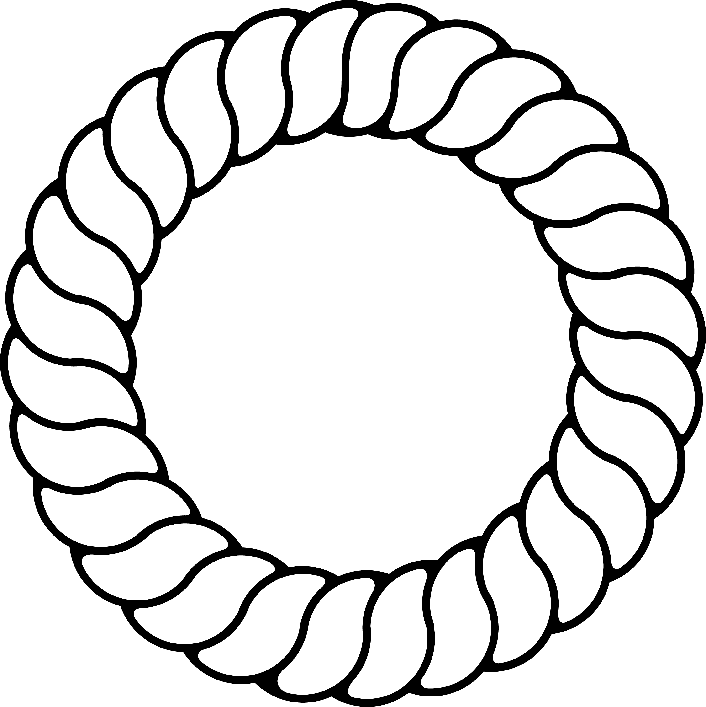
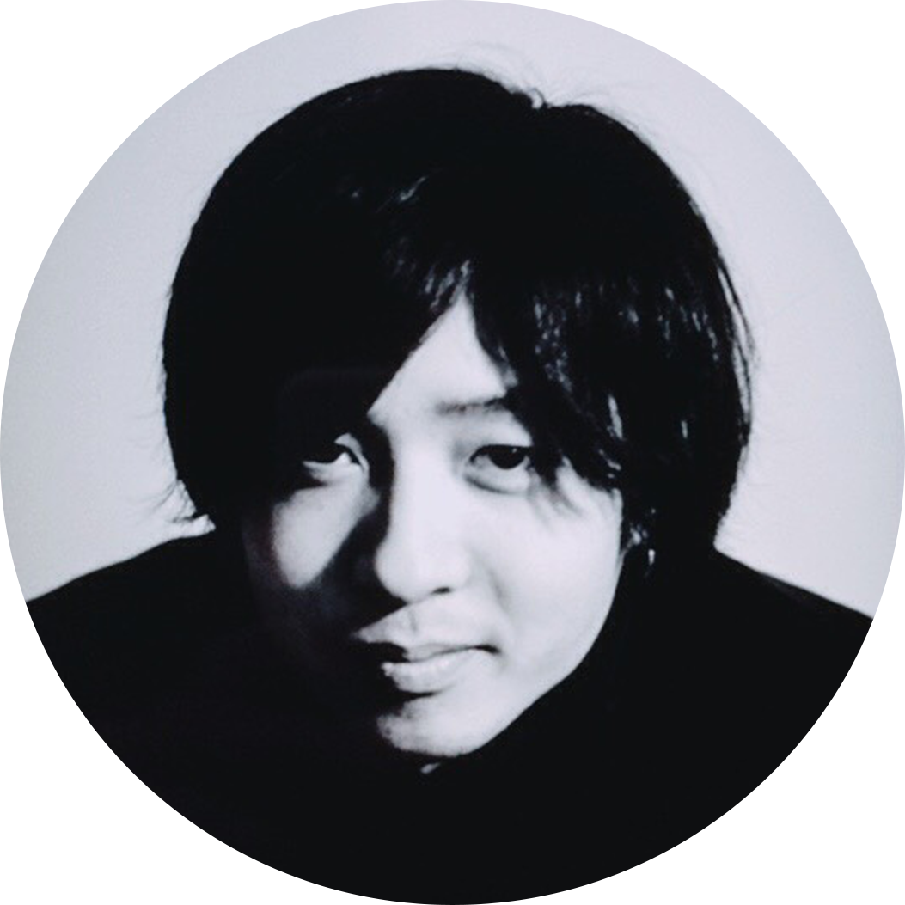

KEHAI Installation
Abema Ozumo Poster
SUKISHA - 釈迦の手のひら
Sound Selector UI
Font Design
Beside Your Bedside EP
Cartoon Vape Design
Hikyo Font
Font Design
Detail
直線や円を感じるサンセリフ体のフォントを作成しようと考え、直線と円をガイドに、バランス良く調整した。tやjなどの尾の部分に丸みを付けて且つ他の文字と馴染ませることで新規性を出した。Bauahus(書体)の文献にもあるように、ただ円と直線でフォントを作成しても不恰好に見えてしまうので、細くするべき部分は細くしたり、フォントとして読めることに重点を置いて制作することを心がけた。
I tried to create a font of a sans serif feeling a straight line or a circle, and I adjusted the balance in a straight line and a circle as a guide. I made novelty by rounding the tail part such as t and j and making it familiar with other characters. As we can see in Bauahus (font) literature, even if we create a font with just a circle and a straight line, it looks awkward, so I make it thinner and focus on emphasis on being able to read as font I tried to remember.
CONNECTION
Fashion / Advertisement
Cooperation
Shoya Uehara (Clothes)
Nami Uehara(Model)
Introduction
文化服装学院所属のデザイナー、Shoya Ueharaのブランド CONNECTION の 2018 Winter Collection のクリエイティブを担当した。フィルム表現でストリートを表現した。
I was in charge of creative in 2018 Winter Collection of brand CONNECTION of Shoya Uehara, a designer belonging to Institute of Cultural Fashion. I tried to express elegant and street graphics.
Nami Uehara(Model)
KHSIER Cartoon Vape
Product / Advertisement
Detail
親しみやすく、今まで見たことのないようなVapeをブランディングしようと考え、カートゥーンの世界観で統制したVapeをデザインすることで、新規性に加え、手に取りたくような親近感を獲得しようと考えた。艶めかしい美しさと、愛らしい美しさの2種類のコンセプトを決定し、それぞれ2色展開した。
Thinking about branding Vape that I'm familiar with so far, I tried to branding Vape that I had never seen before, and by designing Vape controlled by Cartoon's view of the world, in addition to the novelty, I wanted to acquire the familiar feeling that I wanted to pick up Thought. Two concepts of glossy beauty and lovely beauty were decided, each developed in two colors.
Beside Your Bedside EP
Jacket Design
Detail
都内を中心に活躍しているアーティスト、SUKISHAのEP「Beside Your Bedside」のジャケットをデザインした。空間に意味を持たせるため、ベッドの横の空間にはあえてオブジェクトや文字は配置しないようにした。
Designed a jacket of SUKISHA's EP "Beside Your Bedside", an artist active in Tokyo. In order to make space meaningful, we did not dare to arrange objects and letters in the space beside the bed.
Sound Selector
UI Design
Introduction
SOUNDCLOUDは、トラックメイカーとユーザーの繋がりをより密にする便利なツールであるが、故にユーザー同士の繋がりを充実させるコンテンツがあまりない。そこで、ユーザー同士の繋がりという点にフォーカスしてSOUNDCLOUDを補填するツールとしてSound Selectorを考えた。
SOUNDCLOUD is a convenient tool that makes truckmakers and users tighter, but there are not so many contents that enhance the connection between users. So I thought of Sound Selector as a tool to supplement SOUNDCLOUD in terms of connection between users.
SUKISHA - 釈迦の手のひら
Jacket Design
Detail
都内を中心に活躍しているアーティスト、SUKISHAの楽曲「釈迦の手のひら」のジャケットをデザインした。メロウなトラックと幻想的な歌詞に合わせて流動的なイラストを製作し、タイトルロゴはイラストと対照的に直線を用いることで浮かせて強調した。
Designed a jacket of SUKISHA's song "Buddha's palm", an artist active in Tokyo. I made a fluid illustration according to mellow tracks and fantastic lyrics and emphasized the title logo floating by using straight lines as opposed to illustration.
KEHAI
Motion Typography
Model
竹井 未来望 / Mirano Takei
Detail
Abema TVにて絶賛放送中の「Abema TV 大相撲」のポスター制作をアートディレクターのもと行った。花札のような世界観を崩さないようレイアウトには十分気を使った。
I made a poster for "Abema TV Ozumo" under the auspices of Abema TV under the art director. I care enough for the layout so as not to destroy the view of the world like a Japanese Hanahuda.
Abema Ozumo Poster
Advertisement
Producer
鈴井 聡太郎 / Sotaro Suzui
Art Director
松島 佑樹 / Yuki Matsushima
Detail
AbemaTVにて絶賛放送中の「AbemaTV 大相撲」のポスター制作を、アートディレクターのもと行った。花札のような世界観を崩さないよう、モチーフ（特に雲）やロゴの自然なレイアウト、モデルの影の色選定（メインカラーを活かす色）などには十分気を遣った。また、イラストの鳳凰が、メインモチーフであるモデルの印象を妨げないよう、相互関係を意識してスケーリング・ポジショニングを調整した。縦版広告のうち一つは、サイバーエージェント20周年誌に掲載される予定。
I made a poster for "Abema TV Ozumo" in AbemaTV under the art director. I carefully noticed the natural layout of motifs (especially clouds) and logos, color selection of models' shadows (colors that make use of the main color), etc. so as not to destroy the world view like a Hanafuda. In addition, the phoenix of the illustration adjusted the scaling / positioning with conscious of mutual relations so as not to disturb the impression of the model which is the main motif. One of the vertical version advertisements will be posted in "CyberAgrnt 20th anniversary magazine".



根本 翔太
東京都在住
1994年に東京で生まれる
首都大学東京入学
首都大学東京入学
学歴
2015年 - 首都大学東京
専攻: グラフィックデザイン
2013年 - 2014年 科学技術学園高等学校
2011年 - 2013年 高等工科学校
専攻: グラフィックデザイン
2013年 - 2014年 科学技術学園高等学校
2011年 - 2013年 高等工科学校
経歴
2018年 AbemaTV VSXスタジオでインターンとして働く
2017年 文化服装学院の卒業制作チーム5565のクリエイティブを担当
2017年 AbemaTVのVXスタジオで短期インターンとして働く
2016年 ニューヨークで3ヶ月の短期留学
2014年 アートブレーンカンパニー照明部でインターンとして働く
2017年 文化服装学院の卒業制作チーム5565のクリエイティブを担当
2017年 AbemaTVのVXスタジオで短期インターンとして働く
2016年 ニューヨークで3ヶ月の短期留学
2014年 アートブレーンカンパニー照明部でインターンとして働く
Shota Nemoto
Tokyo Japan
Born in Japan (1994).
Working on Degree in graphic design at the Tokyo Metropolitan University.
Working on Degree in graphic design at the Tokyo Metropolitan University.
Educational Background
April, 2015 - Tokyo Metropolitan University
Major: Graphic Design
June, 2013 - March, 2014 Science and Technical High School
April, 2011 - June, 2013 JGSDF High Techinical School
Major: Graphic Design
June, 2013 - March, 2014 Science and Technical High School
April, 2011 - June, 2013 JGSDF High Techinical School
Experience
February, 2018 Internship at VSX in AbemaTV
December, 2017 Branding of 5565, is the guraduation art work of the team in Bunka Fashion College
October, 2017 Internship at VX Studio in AbemaTV
June, 2016 Stayed at NYC for 3 months to learn more about graphic design.
August, 2014 Worked at Art Brain Company as a student designer
December, 2017 Branding of 5565, is the guraduation art work of the team in Bunka Fashion College
October, 2017 Internship at VX Studio in AbemaTV
June, 2016 Stayed at NYC for 3 months to learn more about graphic design.
August, 2014 Worked at Art Brain Company as a student designer
Mail / sho0930k@gmail.com